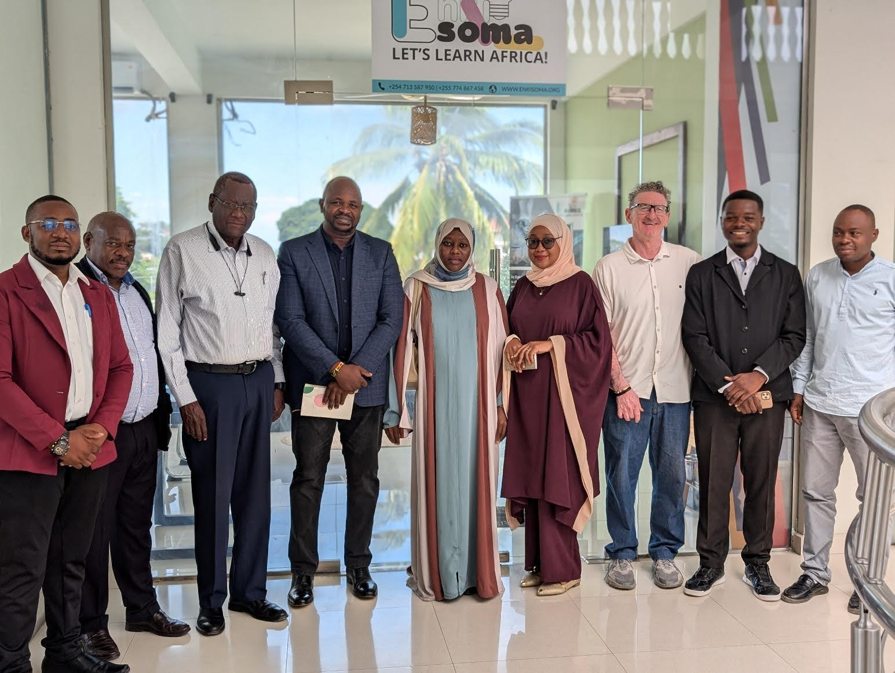

Stay informed about our latest launches, partnerships, and impact across
African schools
LATEST LAUNCH
Enkisoma Africa and MoEVT Zanzibar Complete Lab Installation
Sept 17, 2025 •
Kijangwani,
Zanzibar
Enkisoma Africa, in partnership with MoEVT Zanzibar, has
successfully completed the installation of a state-of-the-art
computer laboratory at Dr. Ali Mohammed Shein Secondary School.
The installation is part of the
Mambo Tehema Project, a major digital
transformation initiative in Zanzibar’s education system.
Phase One equipped 10 secondary schools with modern ICT labs,
reaching 8,476 students. Dr. Ali Moh’d Shein Secondary School
alone benefits 1,832 learners and 78 educators. Each lab is
equipped with 50 computers preloaded with 150+ STEM apps and
digital content.
Teachers also received ICT training. The
launch was presided over by Omar Ali Yussuf, Director General
of ZURA, reaffirming government support. With a
$3 per student per month model, Enkisoma
ensures affordability and sustainability across Zanzibar’s
schools.
Recent Updates

PARTNERSHIP
25 Schools in Zanzibar to Receive ICT Labs
Enkisoma, in partnership with the Ministry of Education and
Vocational Training (MoEVT) Zanzibar, is bringing technology
closer to classrooms by installing modern computer
laboratories in government schools. The project aims to
equip 25 schools with modern computer labs, ultimately
reaching and empowering more than 20,000 students.
A delegation from Enkisoma Africa recently toured schools
that have already received the new labs, including Dr. Ali
Mohamed Shein, Kidongochekundu, and Kiembe Samaki. The
visit was led by Enkisoma Africa Chairman, Dr. Kipyego
Cheluget, a former Kenyan Ambassador, together with the
company’s CEO, Mr. Sankei Ole Kenga, and a team of
experts.
During the visit, the team engaged with headteachers on
how the labs are being integrated into teaching, the
challenges of adopting new technology, and the
opportunities ICT creates for learners. Teachers noted
that students are already more motivated and curious, with
access to tools that will help them develop critical
digital skills.
Ambassador Dr. Chuleget reaffirmed Enkisoma’s vision of
ensuring equal access to technology for all students. “ICT
is more than just a tool—it is a gateway to opportunity,
preparing our young people to compete in the global
knowledge economy,” he said.
Mr. Sankei praised the close cooperation with the Zanzibar
Ministry of Education, noting that strong collaboration
has been vital to the project’s success. He also pledged
Enkisoma’s continued support in advancing educational
development in Zanzibar.
With the rollout of 25 computer labs, thousands of
students will gain hands-on experience with technology, an
important step in preparing them for careers, innovation,
and participation in the digital age.
SUCCESS STORY
Alliance Boys High School Reports 400% Increase
Alliance High School has seen Computer Science enrollment
grow from 30 students in 2018 to 167 in 2021.
Enkisoma Africa, together with the Anglican Church of
Kenya (ACK), launched a
Pay-Go computer lab at Alliance High
School on November 30, 2021. The lab introduced 20 new
devices with STEM-focused content, serving over 2,000
students. The project received
USD 7,000 from Safaricom. The Alliance
project serves as a pilot model for
rolling out labs across 4,000 ACK-sponsored schools,
targeting 4 million students nationwide.
PARTNERSHIP
MOU Signed with Zanzibar Ministry of Education
Enkisoma Africa formalized a strategic partnership with
MoEVT Zanzibar to scale ICT labs.
Enkisoma signed a
Memorandum of Understanding (MOU) with
MoEVT Zanzibar. The MOU covers 25 ICT labs, teacher
training, and integration of STEM content. Ambassador Dr.
Cheluget: “ICT is not just a tool ‚Äì it is a gateway to
opportunity.”